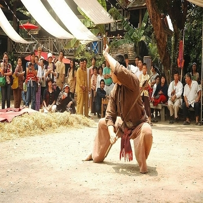
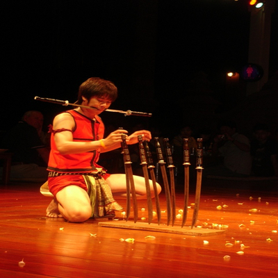
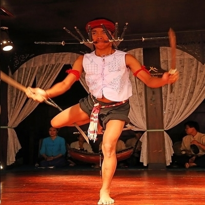

ฟ้อนดาบล้านนา
การฟ้อนดาบมีที่มาจากศิลปะการต่อสู้ของชายชาวล้านนาแต่โบราณ โดยผู้เรียนจะต้องเรียนฟ้อนเชิงมือเปล่าให้คล่องแคล่วเสียก่อนจึงจะเรียนฟ้อนดาบ หรือฟ้อนประกอบอาวุธอื่นๆ ต่อไป แม่ลายฟ้อนของฟ้อนดาบจะคล้ายกับแม่ลายฟ้อนของฟ้อนเชิง แม่ลายฟ้อนของแต่ละครูก็จะแตกต่างกันไป

อุปกรณ์ในการแสดง
การฟ้อนดาบทั่วไปนิยมใช้ดาบเมืองจำนวน ๒ เล่ม โดยจะวางดาบไว้กับพื้น แล้วผู้ฟ้อนจะไหว้ครูบาอาจารย์ ฟ้อนเชิง ตบบะผาบ แล้วจึงจะมาหยิบดาบร่ายรำไปจนครบ ๓๒ ท่า แล้ววางดาบลงกับพื้นอีกครั้ง แต่ผู้ฟ้อนบางคนก็ใช้ดาบโบราณที่สอดไว้ในฝักเพียงเล่มเดียว โดยสะพายดาบไว้กับตัวแล้วจึงจะชักออกมาร่ายรำ
เมื่อร่ายรำเสร็จแล้วก็จะสอดดาบเข้าฝักดังเดิม ผู้ฟ้อนบางคนหรือบางสำนักก็นิยมฟ้อนดาบหลายเล่ม เช่น ฟ้อนดาบ ๑๒ เล่ม โดยนำดาบมาคาบบ้าง มาพาดกับไหล่บ้าง ใช้ขาหนีบดาบบ้าง เพื่อแสดงการรักษาสมดุลของร่างกาย เป็นต้น
การแต่งกาย
การแต่งกายของผู้ฟ้อนดาบคล้ายกับการแต่งกายของการฟ้อนเชิง คือ สวมกางเกงสะดอ เสื้อผ้าฝ้าย เป็นหลัก ดนตรีที่ใช้ประกอบการฟ้อน การฟ้อนดาบนิยมฟ้อนเข้ากับวงกลองปู่เจ่ กลองสะบัดชัย หรือกลองปูจา เพราะมีจังหวะที่คึกคักเร้าใจ สร้างความฮึกเหิมให้กับผู้ฟ้อนและผู้ชมได้ดี
